▲ 꽃 화단 사이로 열차가 지나가는 고양가을꽃축제 정원 사진=한국관광공사
일산호수공원에서 2026고양가을꽃축제가 10월 1일 시작해 11일까지 이어진다. 오늘(3일)은 개천절이자 토요일이고, 개천절 대체공휴일인 5일(월)까지 사흘 연휴가 이미 진행 중이다. 여기에 9일(금) 한글날부터 11일(일)까지 또 한 번의 사흘 연휴가 이어져 이 축제의 방문객이 가장 몰릴 구간이 남아 있다. 입장은 무료다. 문제는 차다. 이 글은 서울 서북권에서 자가용으로 가는 사람 기준으로, 보도와 공식 안내로 확인한 것과 확인하지 못한 것을 나눠 정리했다. 특히 4월 고양국제꽃박람회의 주차·셔틀 안내가 이번 가을 축제에도 그대로 적용되는지는 공식 자료로 확인하지 못했다.
1. 한눈에 보기 — 일정·장소·요금
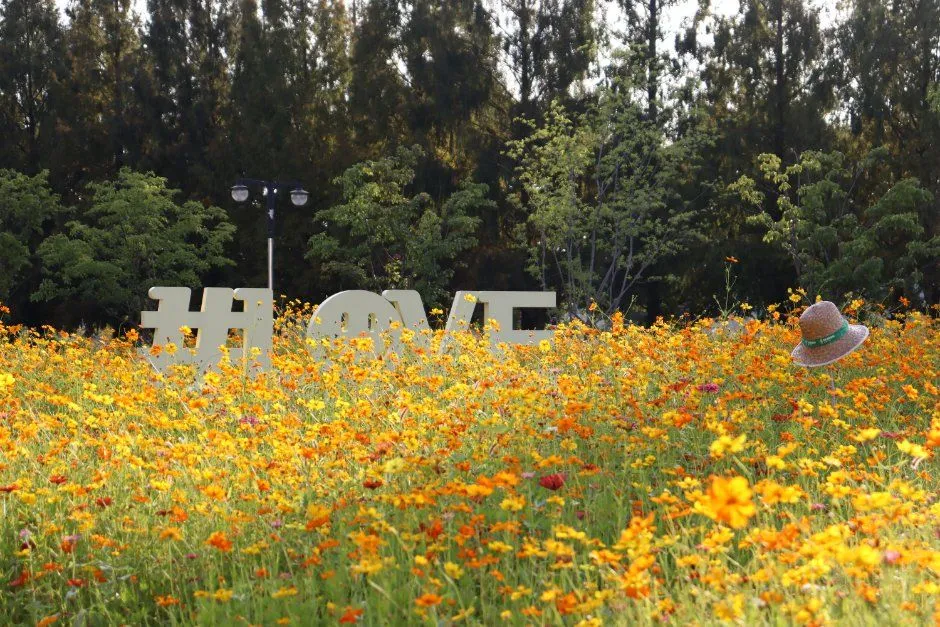
▲ 가을꽃축제를 소개하는 관광공사 게시 사진. 코스모스·켈로시아 꽃밭은 올해 축제의 한 축이다. 사진=한국관광공사
축제는 고양특례시가 일산호수공원에서 여는 행사로, 고양시 화훼농가가 키운 국화와 가을꽃으로 정원을 꾸민다. 올해 주제는 "가을 빠레뜨(Palette)"로 보도됐다. 5m가 넘는 공기막 캐릭터 "고양고양이"가 메인 정원을 지키고, 플라워빙고·꽃낚시·찾아가는 식물병원 같은 참여 프로그램이 마련됐다.
| 항목 | 내용 | 확인 근거 |
|---|---|---|
| 기간 | 10월 1일(목)~11일(일), 11일간 | 고양시 발표 기반 보도 |
| 장소 | 일산호수공원(경기도 고양시 일산동구 호수로 595, 장항동) | 한국관광공사 TourAPI |
| 운영 시간 | 09:00~18:00 | 보도 기준 |
| 입장료 | 무료 (PIATE 2026 아트페어·토크콘서트는 별도 유료로 보도) | 보도 기준 |
| 주제 | "가을 빠레뜨(Palette)" | 보도 기준 |
| 문의 | 031-908-7750 (TourAPI 등록 번호), 고양국제박람회재단 031-908-7652 | 한국관광공사 TourAPI, 재단 공식 페이지 |
| 공식 안내 | 고양국제박람회재단 가을꽃축제 페이지(gief.or.kr, 프로그램·수상자전거·토크콘서트 안내). 4월 박람회 안내는 flower.or.kr | 10월 3일 직접 확인. 주차·셔틀 항목은 이 페이지에 없음 |
ℹ️ 이 글의 확인 수준
일정·운영 시간·무료 입장은 고양시 발표를 옮긴 복수 매체 보도로 일치했다. 수상자전거 요금과 토크콘서트 요금·시간은 재단 공식 페이지(10월 3일 확인)로 채웠다. 반면 주차 요금과 셔틀은 가을꽃축제용 공식 공지를 여전히 찾지 못했다. 해당 항목은 표에서 "미확인" 또는 "과거 안내"로 구분했으니 출발 전 공식 누리집과 문의 전화로 확인하자.
2. 무엇을 볼까 — 꽃 정원과 부대행사
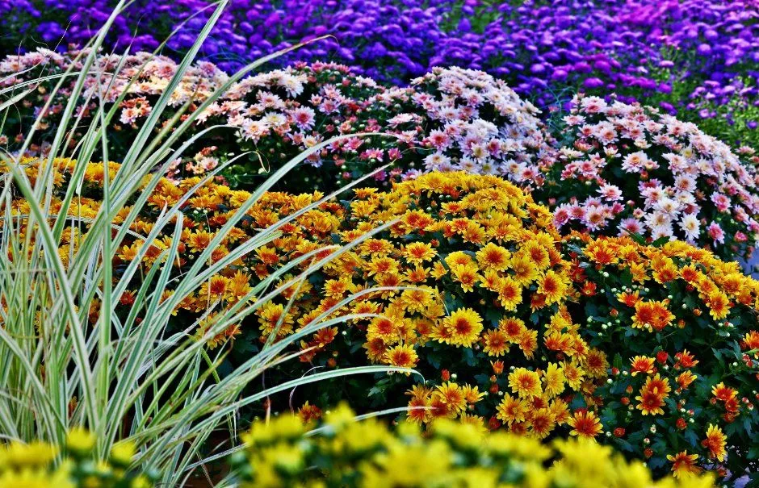
▲ 고양시 화훼농가가 키운 국화는 이 축제의 중심 소재다. 해당 사진은 한국관광공사 등록 사진이다. 사진=한국관광공사
보도와 재단 공식 페이지로 확인되는 프로그램을 정리하면 다음과 같다. 야간 행사의 날짜·시간표는 확인하지 못했다.
| 구분 | 내용 | 비고 |
|---|---|---|
| 꽃 정원 | 국화 중심 가을 주제정원, 코스모스·백일홍·켈로시아 꽃밭, 우주·정글·사막 테마 구역 | 일부 구성은 단일 매체 보도 |
| 참여 프로그램 | 플라워빙고, 꽃낚시 강태공, 찾아가는 식물병원, 의병장 밥할머니 체험관, 고양시 관광상품 부스 | 무료 여부는 프로그램별 확인 필요 |
| 플라워마켓 | 고양시 화훼농가 직판 | 판매 품목·시간 미확인 |
| 호수 체험 | 수상자전거: 2인승 14,000원, 3인승 21,000원, 09:00~일몰(TourAPI 명칭 "수상자전거 체험") | 재단 공식 페이지(10/3 확인) |
| 야간 행사 | "2026 Peer 꽃마당 Festa"(위키트리 등 보도에 명칭 등장). 대중문화 공연·음악·먹거리 행사이며 꽃전시관 옆 광장에서 열린다는 소개가 검색에서 확인됨 | 날짜·시간·요금 미확인, 18:00 폐장 이후 행사로 추정 |
| 한글날 제정 100주년 기념 화단 | 한글날의 의미를 꽃과 정원으로 표현한 기념 홍보화단 | 주최 재단 등록 프로그램(TourAPI) |
| 2027 고양국제꽃박람회 30주년 기념 포토존 | 30주년을 미리 만나는 포토존과 시민 참여 메시지월 | 주최 재단 등록 프로그램(TourAPI) |
| PIATE 2026 | 국제 아트페어, 10월 1~4일 | 별도 유료, 4일까지 |
| 경기공예문화축제 | 10월 8~11일 | 한글날 연휴와 겹침 |
| 토크콘서트 | 10월 9~11일 14:00~16:00, 꽃전시관 꽃책카페, 1일 10,000원 | 재단 공식 페이지(10/3 확인), 출연진은 미확인 |
한글날 제정 100주년 기념 화단과 2027 고양국제꽃박람회 30주년 기념 포토존(시민 참여 메시지월)도 있다. 주최인 고양국제박람회재단이 한국관광공사 TourAPI에 올린 공식 프로그램 안내에 포함된 내용이다. 다만 화단과 포토존의 구체적인 위치와 규모는 확인하지 못했다.
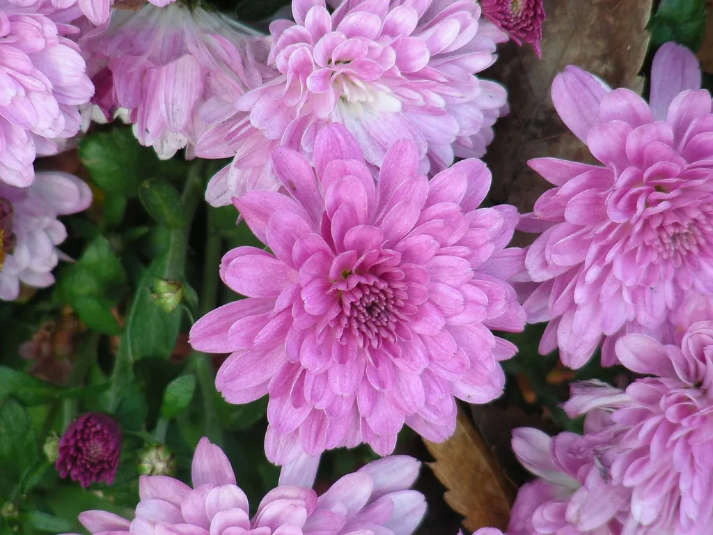
▲ 가을꽃 정원의 주인공인 국화. 분홍 국화 근접 사진으로, 축제장 현장 사진은 아니며 국화 일반 이미지로 쓴다. 촬영지는 확인하지 못했다. 사진=neochicle, Wikimedia Commons, CC BY 2.0
3. 서울 서북권에서 자차 접근
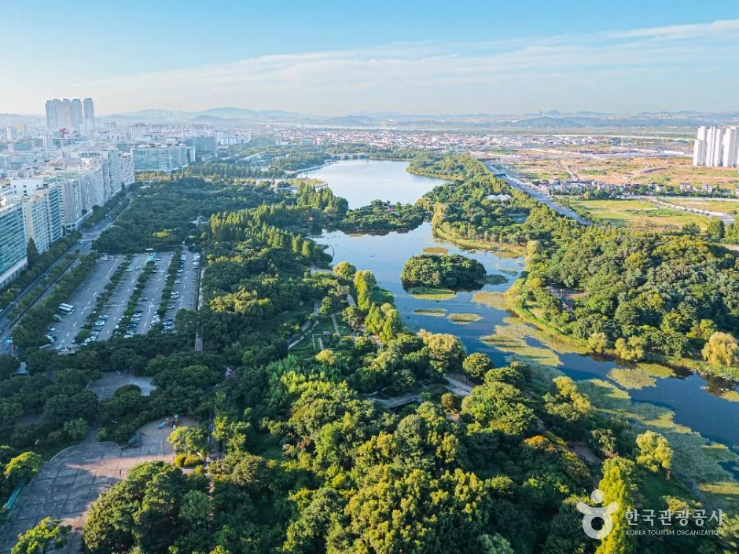
▲ 호수 가장자리를 따라 주차장이 이어진 일산호수공원의 항공 모습. 사진=한국관광공사
내비게이션 목적지는 "일산호수공원"(호수로 595)으로 두면 된다. 은평·마포·서대문·강서 등 서울 서북권에서는 보통 자유로를 타고 일산 방면으로 올라가는 경로가 일반적이지만, 소요 시간과 정체 구간은 날짜·시간에 따라 크게 달라 이번 취재에서 따로 확인하지 못했다. 출발 직전 내비 실시간 정보를 보는 수밖에 없다.
| 항목 | 내용 | 확인 상태 |
|---|---|---|
| 내비 목적지 | 일산호수공원, 경기도 고양시 일산동구 호수로 595 | TourAPI |
| 주차장 | 제1~4주차장 운영, 1,000여 면 안팎(안내 자료마다 1,050대·1,053면으로 차이) | 수치는 자료별로 약간 상이 |
| 전기차 충전 | 제1주차장 6기, 제2 10기, 제3 6기, 제4 4기로 소개한 자료 있음 | 실시간 사용 여부 미확인 |
| 주차 요금 | 평상시 5분당 90원, 행사 시 2,000원 정액으로 소개한 자료 있음 | 올해 가을꽃축제 기준인지 미확인 |
| 소요 시간 | 공식 통계는 없음. 아래 추정표 참고 | 출발 직전 내비 실시간 확인 |
| 대안(지하철) | 3호선 정발산역 1번 출구에서 도보 약 10분 | 고양국제꽃박람회 오시는 길 안내(4월 박람회 기준) |
✅ 서북권 자차 방문 요령
· 공원 주차장은 1,000여 면 안팎(안내 자료마다 1,050대·1,053면으로 차이)이라 연휴 낮에는 만차 대기가 길어질 수 있다(공식 혼잡 예측은 확인하지 못함)
· 개장 시간인 09:00 전후에 도착하면 주차 부담이 가장 작을 것으로 보인다(추정)
· 주차 요금은 평상시와 행사 시가 다르다고 알려져 있으니 현장 안내판을 확인한다
· 차가 막히면 정발산역 방면으로 지하철을 타는 것도 방법이다
4. 주차·셔틀 — 4월 박람회 안내와 구분해야 한다
고양국제꽃박람회 누리집의 "오시는 길"(4월 박람회 기준)에는 임시주차장 3곳(장미·선인장 주차장 상시, 까치 주차장 주말·공휴일)과 셔틀 안내가 올라 있다. 평일 7분 간격 09시~20시, 주말 5~7분 간격 08:30~20:30 운행이라는 내용이다. 다만 이것은 2026 고양국제꽃박람회(4월)를 위한 안내다. 가을꽃축제에 같은 임시주차장과 셔틀이 운영된다는 근거는 찾지 못했다. 일부 블로그가 이를 가을 축제 정보로 섞어 소개한 사례가 있어 주의가 필요하다.
| 정보 | 내용 | 가을꽃축제 적용 여부 |
|---|---|---|
| 공원 상설 주차장 | 제1~4주차장, 1,000여 면 안팎(자료마다 1,050대·1,053면) | 상시 운영 시설, 사용 가능 |
| 박람회 임시주차장 | 장미·선인장·까치 주차장 | 4월 박람회용, 가을 적용 미확인 |
| 박람회 셔틀 | 평일 7분, 주말 5~7분 간격 | 4월 박람회용, 가을 적용 미확인 |
| 가을꽃축제 셔틀 | 재단 가을꽃축제 페이지(10/3 확인)에 주차·셔틀 안내 없음 | 방문 전 문의(031-908-7750, 재단 031-908-7652) |
정리하면 확실한 것은 공원 상설 주차장이고, 임시주차장·셔틀은 가을에는 없다고 보고 움직이는 편이 안전하다. 주차 면수 1,050대와 1,053면 중 어느 쪽이 맞는지는 1차 출처(공원 관리 주체의 공식 공지)를 찾지 못해 이번에도 가리지 못했다.
4월 박람회 기준 안내는 누리집에서 확인할 수 있다. 오시는 길 안내(4월 박람회 기준) 바로가기
5. 언제 가야 덜 붐빌까 — 날짜별 정리
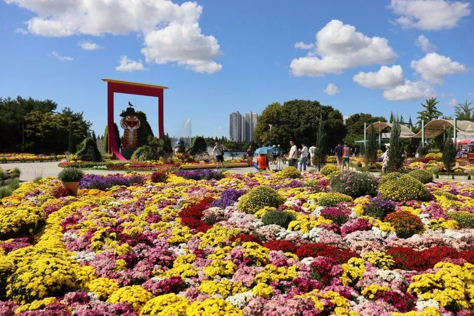
▲ 국화 화단과 조형물이 이어진 축제장. 연휴에는 이런 포토존 앞에 대기 줄이 생길 수 있다. 사진=한국관광공사
| 날짜 | 특징 | 자차 판단 |
|---|---|---|
| 10월 3일(토) 개천절 | 주말과 공휴일 겹침, PIATE 아트페어 진행 | 붐빌 가능성 큼(추정) |
| 10월 4일(일) | PIATE 마지막 날 | 붐빌 가능성 큼(추정) |
| 10월 5일(월) | 개천절(10/3 토) 대체공휴일(관공서의 공휴일에 관한 규정). 3~5일 사흘 연휴 마지막 날 | 붐빌 가능성 있음(추정) |
| 10월 6~8일 | 평일, 8일부터 경기공예문화축제 | 상대적으로 여유(추정) |
| 10월 9일(금) 한글날 | 토크콘서트 시작(14:00~16:00), 9~11일 사흘 연휴 첫날 | 붐빌 가능성 큼(추정) |
| 10월 10~11일 | 연휴, 폐막 | 붐빌 가능성 큼(추정) |
공식 혼잡 통계는 확인하지 못했다. 위 표의 판단은 휴일 일정에 근거한 일반적인 추정이다. 평일 오전이 가장 한산할 가능성이 높지만 확인된 사실은 아니다.
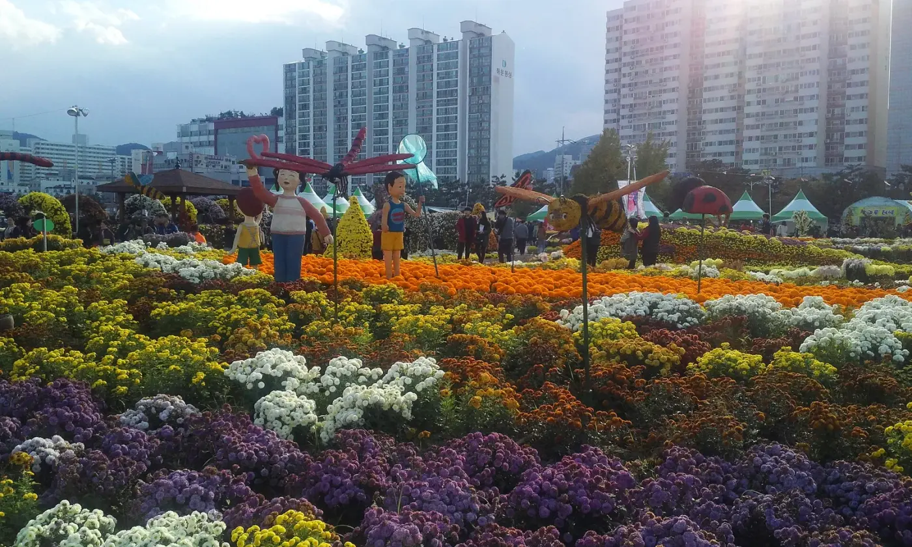
▲ 참고용 사진. 창원 마산 가고파국화축제의 국화 화단으로, 일산호수공원 현장이 아니라 가을 국화 축제의 일반 분위기를 보여준다. 사진=Choi2451, Wikimedia Commons, CC BY-SA 3.0
| 구간 | 09:00~11:00 | 11:00~15:00 | 15:00~18:00 폐장 | 행사 참고 |
|---|---|---|---|---|
| 3~5일 연휴(남은 5일 월) | 비교적 주차 여유(추정) | 주차 대기 가능성 큼(추정) | 귀가 차량과 겹침(추정) | 5일은 연휴 마지막 날이라 오후 귀경·귀가 정체와 겹칠 수 있음(추정) |
| 9~11일 연휴(금·토·일) | 가장 무난한 시간대(추정) | 주차·포토존 대기 가능성 큼(추정) | 마지막 입장 부담, 11일은 폐막일 | 토크콘서트 14:00~16:00, 경기공예문화축제(8~11일), 수상자전거 일몰까지 |
폐막일(11일)은 막바지 방문이 몰릴 수 있어, 꽃 상태를 보고 싶다면 9일 오전이나 8일 평일을 고려할 만하다(추정). 야간 행사 Peer 꽃마당 Festa는 날짜·시간을 확인하지 못해 위 표에 넣지 않았다.
6. 일산 연계 코스 — 노래하는분수대와 꽃향기페스타
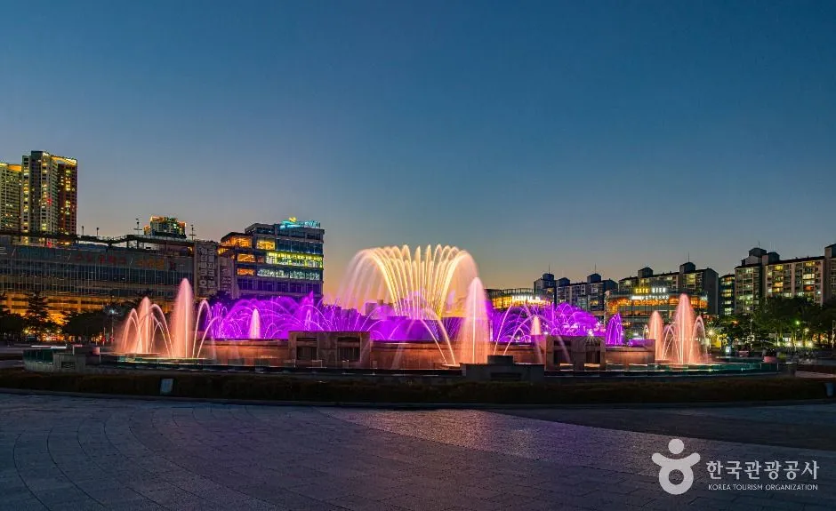
▲ 호수공원 안 노래하는분수대. 해가 지면 조명이 켜진 모습을 볼 수 있다. 가동 시간은 확인하지 못했다. 사진=한국관광공사
같은 공원 안의 노래하는분수대(호수로 731)는 축제와 함께 볼 만한 곳이다. 한국관광공사 정보와 검색 결과로는 분수대가 동절기(11월~4월 말)에만 휴장한다고 알려져 있어 10월은 가동 기간으로 보인다(공식 홈페이지 gys.or.kr에서 10월 3일 "가동 중" 표시 확인). 다만 올해 가을 가동 시간과 야간 조명 시간표는 확인하지 못했다. 축제 운영은 18:00에 끝나므로 분수 시간대와 맞물리는지는 방문 전 확인이 필요하다.
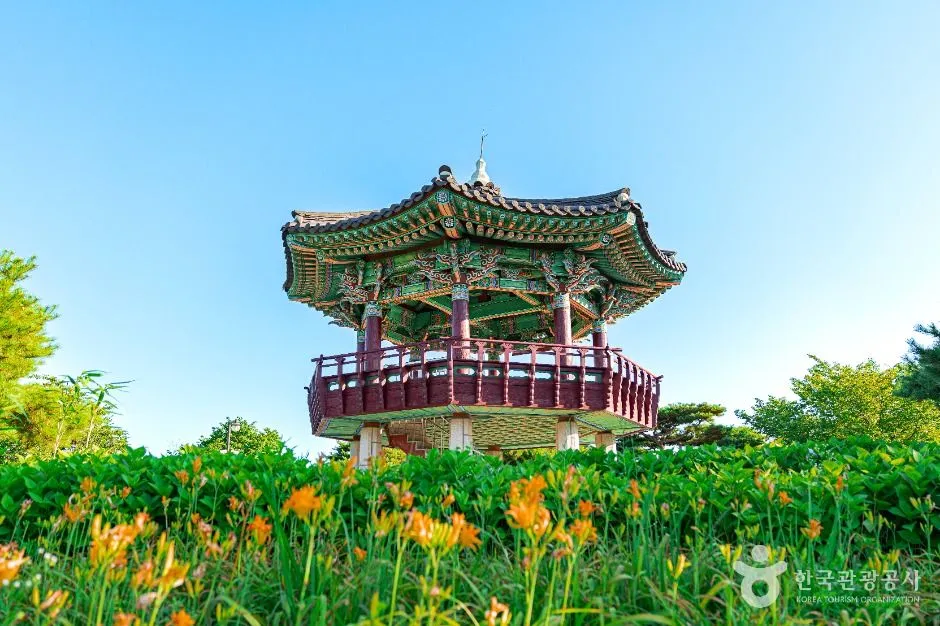
▲ 공원 안 한국식 정자. 꽃밭과 어우러진 풍경이 호수 산책의 포인트다. 공원 일반 사진으로, 촬영 시기는 가을과 다를 수 있다. 사진=한국관광공사
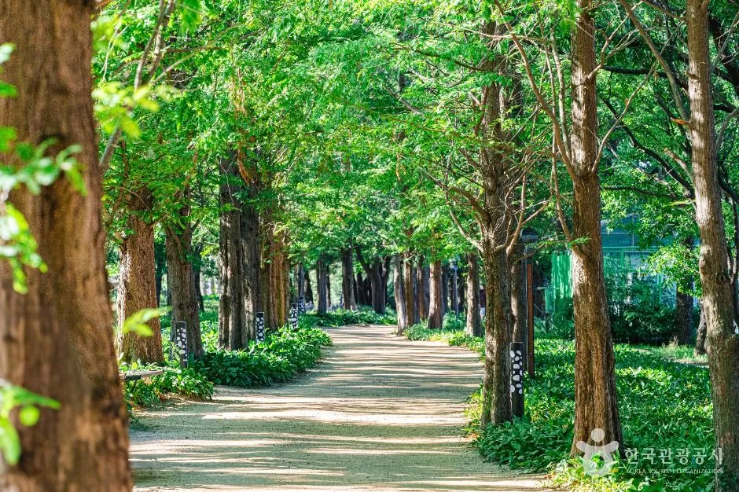
▲ 메타세쿼이아 산책길. 축제장을 둘러본 뒤 걷기 좋은 구간이다. 공원 일반 사진으로, 촬영 시기는 가을과 다를 수 있다. 사진=한국관광공사
이 축제가 끝난 뒤에도 꽃 행사는 이어진다. 10월 17~25일에는 스타필드 고양 1층 동측 야외광장에서 2026고양꽃향기페스타(10:00~20:00)가 열린다. "우주꽃 수집" 스탬프 투어와 포토존이 중심이고 고양시 화훼농가 12곳 부스가 참여한다고 위키트리·데일리안 등 복수 보도로 확인된다. 입장료는 명시된 자료를 찾지 못했다.
| 장소 | 일정·시간 | 메모 |
|---|---|---|
| 일산호수공원 가을꽃축제 | 10/1~11, 09:00~18:00 | 무료 |
| 노래하는분수대 | 호수로 731 | 10월 가동 중 표시 확인, 가동 시간표 미확인 |
| 스타필드 고양 꽃향기페스타 | 10/17~25, 10:00~20:00 | 1층 동측 야외광장, 입장료 미확인 |
호수공원에서 차를 한 번 세운 뒤 걸어서 이어 갈 만한 곳을 한국관광공사 TourAPI 등록 정보로 정리했다. 이동 시간은 확인된 자료가 없어 적지 않았다.
| 장소 | 주소 | 메모 |
|---|---|---|
| 노래하는분수대 | 일산동구 호수로 731 | 공원 안, 가동 시간표 미확인 |
| 정발산공원 | 일산동구 마두동 | 공원 일반 정보, 축제와 별개 산책 코스 |
| 라페스타 | 일산동구 무궁화로 20-11(장항동) | 식사·쇼핑, 지하철 3호선 정발산역 일대 |
| 웨스턴돔 | 일산동구 정발산로 24(장항동) | 식사·쇼핑 |
| 풍동 애니골 | 일산동구 풍산로 35 | 음식점 거리, 차로 별도 이동 필요(공원에서의 거리는 미확인) |
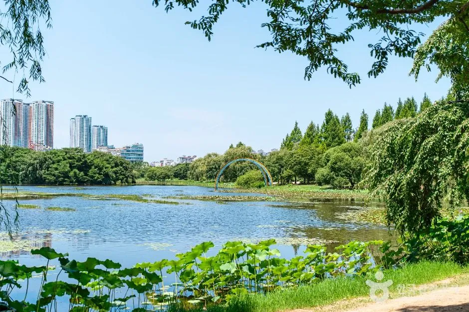
▲ 호수공원의 호수 풍경. 공원 일반 사진으로, 촬영 시기는 가을과 다를 수 있다. 사진=한국관광공사
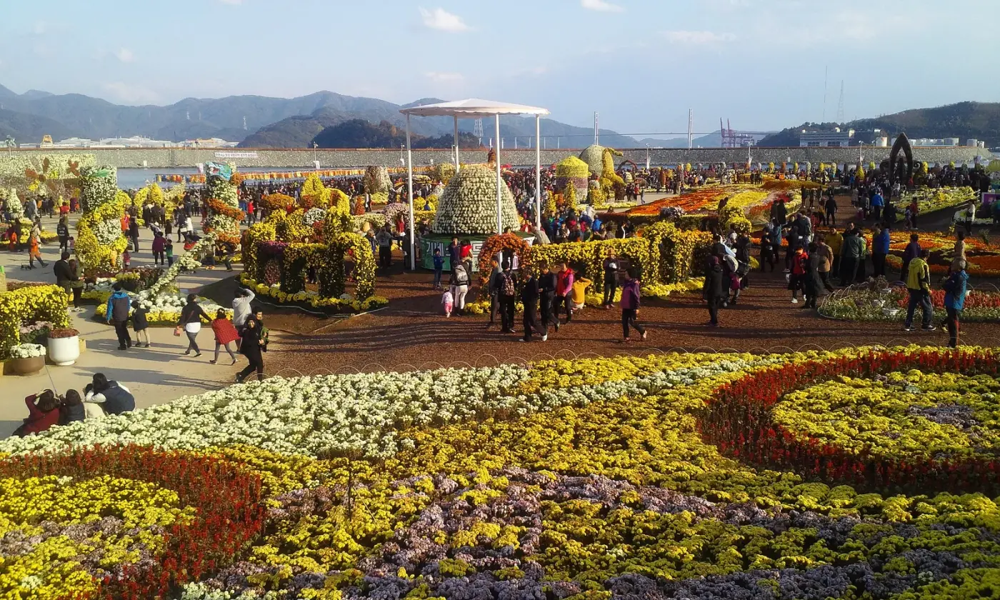
▲ 참고용 사진. 창원 마산 가고파국화축제 현장으로, 일산호수공원이 아닌 가을 국화 축제의 일반 분위기다. 사진=Choi2451, Wikimedia Commons, CC BY-SA 3.0
7. 다른 가을꽃 행사와 비교하려면
서울 서북권에서 차로 갈 수 있는 다른 가을 코스는 기존 기사에서 정리했다. 서울 도심 국화는 서울로7017 가을 국화, 억새는 하늘공원 억새축제, 경기 북부 정원은 양주 나리공원 가을꽃이 있다. 임진각은 파주 임진각 평화누리공원과 묶을 수 있다. 주차 부담이 걱정이면 서울 무료 주차 명소 가이드도 참고할 만하다. 한글날 연휴 일정이 겹친다면 궁중문화축전 주차 가이드와 경기 북부 포천 가든페스타도 비교해 볼 수 있다.
✅ 출발 전 체크리스트
· 일정 10/1~11, 09:00~18:00, 입장 무료
· 내비: 일산호수공원(호수로 595)
· 가을 셔틀·임시주차장은 미확인, 4월 박람회 안내와 혼동 금지
· 문의 031-908-7750, 재단 031-908-7652, 안내 gief.or.kr
· 수상자전거 2인 14,000원·3인 21,000원, 토크콘서트 1일 10,000원, PIATE는 4일까지 별도 유료
8. 요약
2026고양가을꽃축제는 10월 1~11일 일산호수공원에서 열리며, 09:00~18:00 운영, 입장은 무료다. 국화 정원, 코스모스·켈로시아 꽃밭, 플라워빙고와 식물병원 같은 참여 프로그램이 있고, 8일부터 경기공예문화축제, 9일부터 토크콘서트가 이어진다.
서울 서북권에서는 내비에 "일산호수공원"을 찍고 가며, 상설 주차장은 제1~4주차장 1,000여 면 안팎이다(안내 자료마다 1,050대·1,053면으로 차이). 가을 축제용 셔틀·임시주차장, 행사 시 주차 요금, 야간 행사 Peer 꽃마당 Festa 일정, 노래하는분수대 가을 가동 시간표는 확인하지 못했으니 재단과 031-908-7750에 확인하자. 수상자전거는 2인 14,000원·3인 21,000원이다. 10월 17~25일에는 스타필드 고양에서 꽃향기페스타가 이어진다.